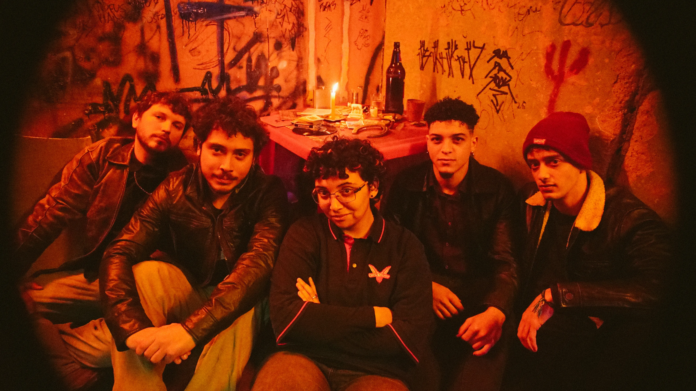
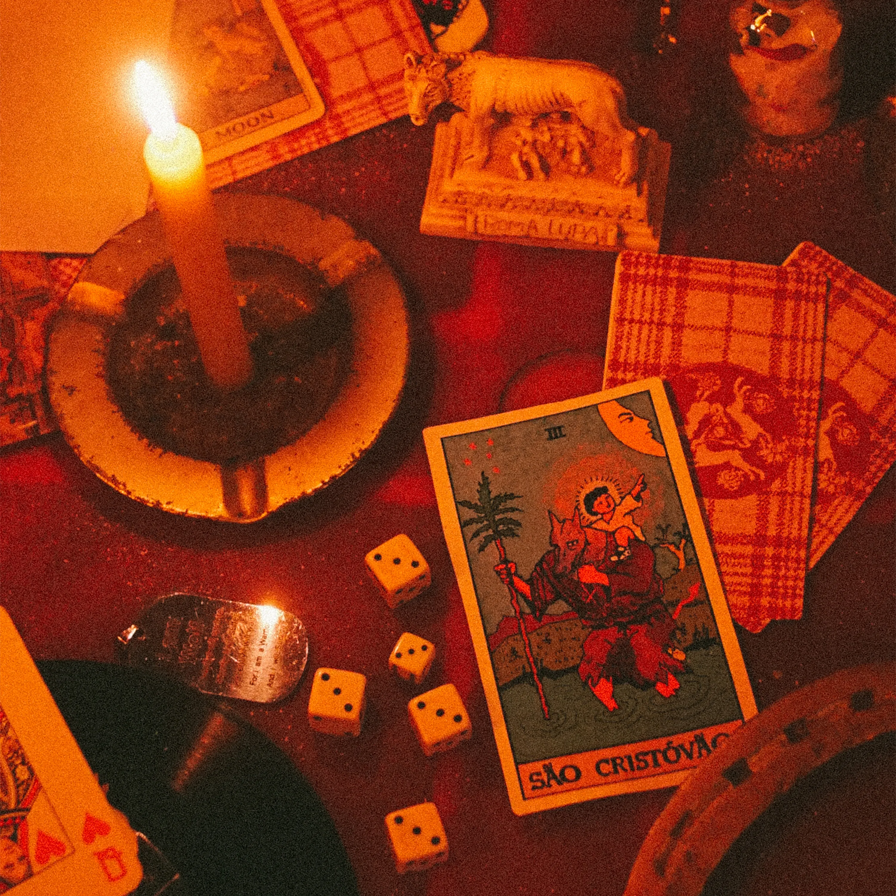

Projeto Hare transforma santos, lobisomens e cartas de tarô em um disco sobre devoção, amor e obsessão
Com participação da Bella e o Olmo da Bruxa, “São Cristóvão” combina guitarras marcantes, refrões pop e um universo simbólico que atravessa todas as suas faixas
Santos com cabeça de cachorro, lobisomens, cartas de tarô, bares de esquina e amores vividos como atos de devoção. É desse imaginário que nasce São Cristóvão, terceiro álbum da banda gaúcha Projeto Hare. Ao longo de 13 faixas de um rock intenso, o grupo constrói aquilo que define como um verdadeiro “tarô de boteco”: uma espiritualidade jovem, urbana e complexa, feita de guitarras, copos sobre a mesa, fantasmas, promessas e noites mal dormidas. O disco chega às plataformas digitais no dia 24 de agosto.

Musicalmente, São Cristóvão dialoga com o rock alternativo dos anos 2000, o power pop, o pop punk e o indie rock, mas evita a nostalgia fácil. As guitarras velozes, os riffs marcantes e a alternância entre os vocais de Adara Araújo, Arthur Nedel e Noam Mendes conduzem um álbum que constrói uma identidade própria a partir de referências que vão da cultura pop ao imaginário religioso, do RPG ao folclore.
Mais do que um disco sobre relacionamentos, São Cristóvão investiga diferentes formas de devoção. Seus personagens vendem a alma, tornam-se soldados, cães fiéis, reis, lobos e santos na tentativa de sustentar vínculos que nem sempre se mostram recíprocos. Em vez de apresentar o amor romântico como redenção, os gaúchos da Projeto Hare preferem explorá-lo como uma força capaz de transformar, consumir e, às vezes, apagar identidades.

E essa ideia atravessa praticamente todas as músicas do álbum. Em “Rainha Má”, faixa que abre o disco e principal aposta da banda, o eu lírico admite: “Vendi minha alma pra rainha má”, antes de confessar um ciclo do qual parece incapaz de escapar: “Te conheço de anos, vi todos os seus truques já, mas eu caio toda sexta-feira.” A canção sintetiza um dos grandes temas do álbum: o ciclo de entrega e submissão a pessoas, afetos e crenças que insistem em se repetir.
A faixa conta com participação especial da banda gaúcha Bella e o Olmo da Bruxa, um dos nomes em ascensão da nova cena independente do estado. O encontro nasceu depois que as duas bandas dividiram o palco durante o Rolê do Bem, evento beneficente organizado após as enchentes que atingiram o Rio Grande do Sul em 2024.
O álbum também recebe a participação do músico gaúcho Théo Fetter em “Não Vai Ter Natal”, faixa em que assume os vocais masculinos principais acompanhado por sua banda.
Um tarô de boteco entre santos, cães e fantasmas
Outra das faixas centrais do disco é “Dia do Soldado Esquecido”, que sintetiza bem um dos temas de São Cristóvão: o desejo de, pela primeira vez, deixar de carregar tudo sozinho. Em versos como “quero que alguém suje suas mãos por mim” e “eu não quero mais pedir pra ninguém me amar”, a música transforma a figura do soldado em metáfora para quem sempre sustenta os outros, mas raramente encontra quem faça o mesmo por si.
Esse imaginário também ajuda a compreender o título do álbum. Inspirado pela representação ortodoxa de São Cristóvão com cabeça de cachorro e por referências ao RPG, ao folclore e ao imaginário religioso, a Projeto Hare constrói um universo onde santos, lobos, cães, fantasmas e cartas de tarô convivem naturalmente. Em vez de recorrer a esses símbolos apenas como elementos estéticos, a banda os transforma em parte da própria narrativa das canções.
Sobre a Projeto Hare
Formada em Porto Alegre, a Projeto Hare nasceu nos corredores do Colégio Militar da cidade e, desde então, vem consolidando uma identidade própria dentro da nova cena do rock gaúcho. Hoje, a banda é formada por Adara Araújo (vocais), Arthur Nedel (vocais e guitarra), Noam Mendes (vocais e guitarra), Otávio da Rosa (baixo) e Leonardo Casagrande (bateria). Com produção, mixagem e masterização assinadas por Arthur Nedel e Lucas Mirovski, São Cristóvão reafirma a identidade da Projeto Hare e consolida um universo artístico em que referências religiosas, folclóricas e afetivas se transformam em uma linguagem musical singular.
Tracklist
- 01 Rainha Má (part. Bella e o Olmo da Bruxa)
- 02 Não Quero Mais Mudar
- 03 O Cão Mais Fiel do Mundo
- 04 Dia do Soldado Esquecido
- 05 Fecharam Nosso Bar
- 06 Noites Mofadas
- 07 Cérebro!
- 08 Quem Me Conhece Sabe
- 09 Tórrido Ato
- 10 Não Vai Ter Natal (part. Théo Fetter)
- 11 O Lobo
- 12 São Cristóvão
- 13 Eu Tentei
Ficha técnica
- Produção musical
- Arthur Nedel e Lucas Mirovski
- Engenharia de som
- Arthur Nedel — Minuano Music Hub
- Mixagem e masterização
- Arthur Nedel e Lucas Mirovski
- Vocais principais
- Adara Araújo, Arthur Nedel e Noam Mendes
- Guitarras e violões
- Arthur Nedel, Noam Mendes e Lucas Mirovski
- Baixo
- Otávio da Rosa
- Bateria
- Leonardo Casagrande
- Teclas
- Pedro Denega, Lucas Mirovski, Arthur Nedel e Noam Mendes
- Percussões
- Leonardo Casagrande, Arthur Nedel, Noam Mendes e Adara Araújo
- Saxofone
- Lorenzo Pilotto
- Bandoneon
- Eduardo Cardeal
- Backing vocals
- Arthur Nedel, Noam Mendes, Otávio da Rosa, Leonardo Casagrande, Felipe Pacheco, Rafaela Bello, Frederico Mattos, Bruno Bauer e Guilherme Leindecker
- Vozes convidadas
- Pedro Acosta e Théo Fetter
- Guitarras convidadas
- Felipe Pacheco e Bruno Bauer
- Baixo convidado
- Guilherme Leindecker
- Logística e apoio técnico
- Arthur Dann
- Foto de capa
- Lucas “Expedidor” Bellator
- Arte de capa
- Noam “Dr. Memes” Mendes